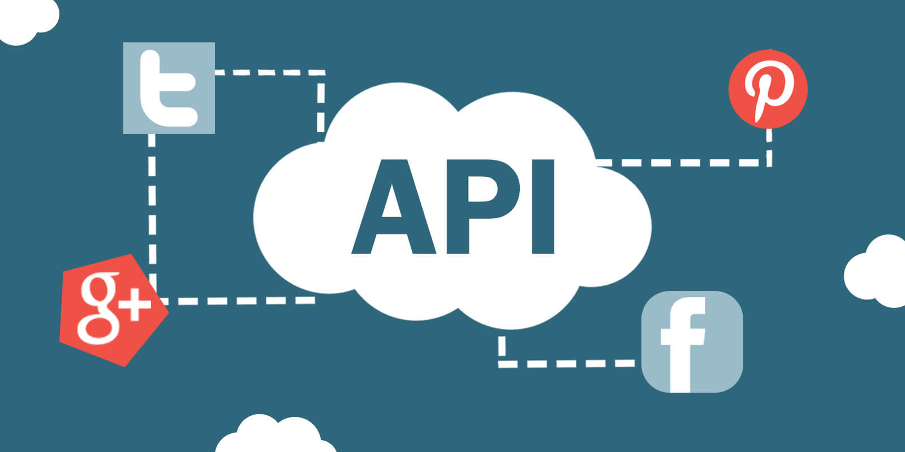

API in JavaScript
Welcome to the world of web development. In today's article, we'll be exploring the powerful world of working with external APIs in JavaScript. This is a crucial skill for any developer looking to create dynamic and interactive web applications. We'll be specifically focusing on three popular methods for making API calls in JavaScript: the Fetch API, Axios, and Async/Await.
Before we get started, let's quickly cover what an API actually is. API stands for Application Programming Interface, and it essentially allows different software systems to communicate with each other. In the context of web development, APIs are commonly used to retrieve and send data from external sources, such as databases or third-party services. This makes it possible to create dynamic and interactive web applications that can display real-time information to users.
The Fetch API stands as a fundamental built-in web API within contemporary browsers, offering a straightforward means to execute HTTP requests towards external servers. Leveraging Promises to manage asynchronous operations, it proves to be a potent instrument for retrieving data from external APIs. Initiating a basic GET request entails utilizing the fetch() function, wherein the URL of the desired API endpoint is supplied as an argument. Subsequently, we employ a .then() method to process the response, followed by converting it to JSON through the .json() method. Let's delve into a practical example involving a fictional weather API:
fetch('https://api.weatherapi.com/forecast.json?key=YOUR_API_KEY&q=NewYork&days=3')
.then(response => response.json())
.then(data => console.log(data));
This code snippet elegantly illustrates the simplicity of employing the Fetch API to fetch data. By furnishing the API endpoint URL and sequentially chaining .then() methods, we seamlessly handle the response and access the returned data from the server. Widely supported across modern browsers, the Fetch API presents an intuitive interface for executing API calls with ease and efficiency.
While the Fetch API serves as a robust built-in tool for executing HTTP requests in modern browsers, some developers opt for third-party libraries like Axios when it comes to making API calls in JavaScript. Axios, renowned as a popular HTTP client library, offers a more comprehensive and user-friendly interface for managing asynchronous requests. Its feature-rich nature encompasses capabilities such as request and response interception, automatic JSON data transformation, and built-in error handling. Integration of Axios into your project is straightforward: simply install it via npm or yarn and import it into your code. Let's explore an example illustrating the usage of Axios for sending a POST request to a hypothetical user authentication API:
import axios from 'axios';
axios.post('https://api.authenticationapi.com/login', {
username: 'john_doe',
password: 'secretpassword'
})
.then(response => console.log(response.data))
.catch(error => console.error(error));
In this code snippet, a POST request is made to a fictional user authentication API using Axios. By specifying the URL of the API endpoint and providing the desired data within the request body, Axios simplifies the process of executing API calls in JavaScript. Its clean and consistent interface streamlines the handling of responses and errors, enhancing the developer experience significantly.
Yet another approach to handling asynchronous operations in JavaScript involves the use of the async/await syntax, offering a succinct and intuitive alternative for making API calls. This syntax, built upon the foundation of Promises, enables developers to write asynchronous code that resembles synchronous code, enhancing readability and maintainability. By annotating a function as async, we gain the ability to employ the await keyword, which suspends the function's execution until the awaited Promise resolves. Let's reimagine our previous example utilizing async/await:
import axios from 'axios';
const loginUser = async () => {
try {
const response = await axios.post('https://api.authenticationapi.com/login', {
username: 'john_doe',
password: 'secretpassword'
});
console.log(response.data);
} catch (error) {
console.error(error);
}
};
